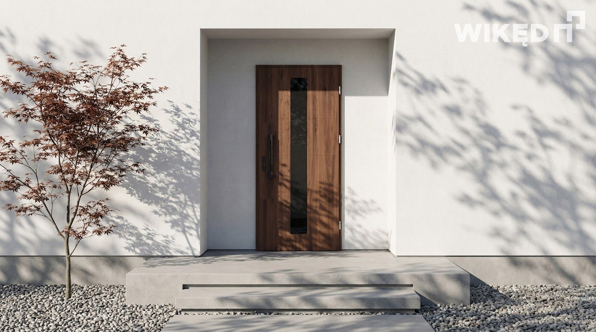
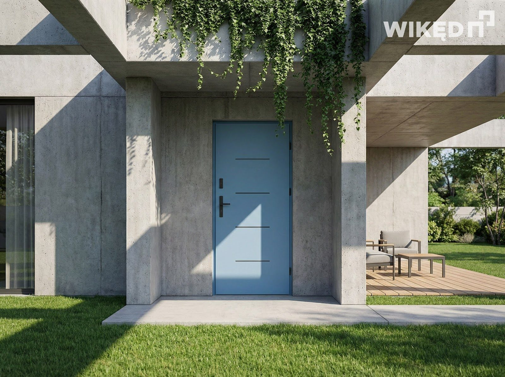

30 lat doświadczenia
Znamy branżę od podszewki i montujemy wyłącznie sprawdzone systemy klas premium.

Poznaj historię PROMYK — od pierwszego montażu żaluzji po nowoczesny showroom w Wieluniu.
PROMYK to rodzinna firma, która powstała w 1997 roku. Od ponad dwóch dekad rozwijamy się dzięki pasji, zaangażowaniu i ciężkiej pracy, dostarczając naszym klientom rozwiązania, które łączą funkcjonalność, estetykę i najwyższą jakość.
Nasza historia rozpoczęła się od montażu żaluzji. To właśnie od tej usługi właściciel firmy zaczął budować doświadczenie oraz zaufanie klientów. Z czasem dołączyła do niego żona i wspólnie stworzyli dwuosobową firmę, rozpoczynając produkcję osłon okiennych w niewielkim pomieszczeniu.
Kolejne lata przyniosły dynamiczny rozwój. Firma przeniosła się do siedziby przy domu, gdzie rozszerzyliśmy działalność o produkcję rolet zewnętrznych. Rosnące grono zadowolonych klientów oraz coraz szersza oferta sprawiły, że powstał samodzielny budynek, w którym oprócz osłon okiennych zaczęliśmy oferować również okna, drzwi, bramy garażowe oraz nowoczesne zewnętrzne systemy przeciwsłoneczne.


Rodzinny charakter naszej firmy pozostaje jej największą siłą. Do zespołu dołączył najpierw syn, a następnie córka, dzięki czemu kolejne pokolenie aktywnie uczestniczy w dalszym rozwoju przedsiębiorstwa. Łączymy wieloletnie doświadczenie z nowoczesnym podejściem, stale poszerzając ofertę i podnosząc jakość naszych usług.
Dziś z dumą zapraszamy do naszego nowego showroomu – miejsca, w którym można zobaczyć najnowsze produkty, porównać dostępne rozwiązania i skorzystać z fachowego doradztwa. To kolejny etap w historii firmy PROMYK i dowód na to, że nieustannie inwestujemy w rozwój oraz komfort naszych klientów.
Od pierwszego montażu żaluzji w 1997 roku po nowoczesny salon ekspozycyjny – niezmiennie kierujemy się tymi samymi wartościami: uczciwością, rzetelnością, jakością i indywidualnym podejściem do każdego klienta. To właśnie zaufanie naszych klientów pozwala nam rozwijać się już od blisko 30 lat.
Znamy branżę od podszewki i montujemy wyłącznie sprawdzone systemy klas premium.
Przeprowadzimy Cię przez cały proces: od profesjonalnego pomiaru aż po precyzyjny montaż.
Udzielamy pełnego bezpieczeństwa na zakupione u nas produkty oraz nasze usługi instalacyjne.
Jesteśmy rodzinną firmą z Wielunia. Znamy potrzeby i budownictwo naszych sąsiadów.
Jesteśmy oficjalnym partnerem i autoryzowanym dystrybutorem marek premium — montujemy wyłącznie systemy, za które możemy ręczyć własną gwarancją.


„Pełen profesjonalizm! Montaż okien VEKA wykonany bezbłędnie. Doradztwo techniczne na najwyższym poziomie, ekipa czysta i dokładna. Z czystym sumieniem polecam firmę Promyk z Wielunia.”
„Zakupiliśmy u nich drzwi Wikęd oraz bramę garażową Nice. Wszystko działa bez zarzutu, pomiar i montaż przebiegły niezwykle sprawnie. Świetny kontakt z biurem obsługi.”
„Zleciłem montaż rolet zewnętrznych i pergoli tarasowej. Efekt przerósł moje oczekiwania, jakość materiałów i wykonania to absolutne premium. Bardzo rzetelny montaż.”
Umów bezpłatny pomiar i przekonaj się, jak wygląda współpraca z rodzinną firmą z niemal 30-letnim doświadczeniem.